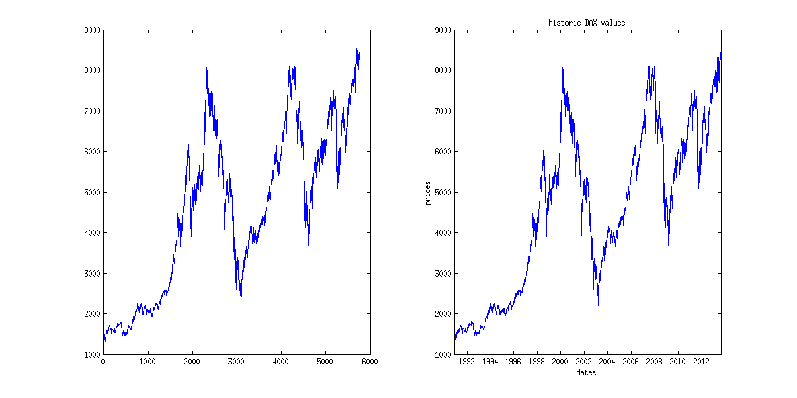
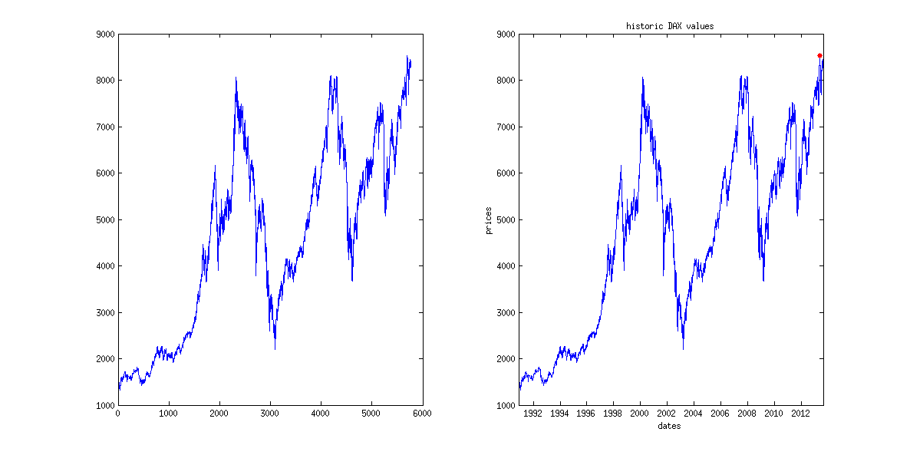
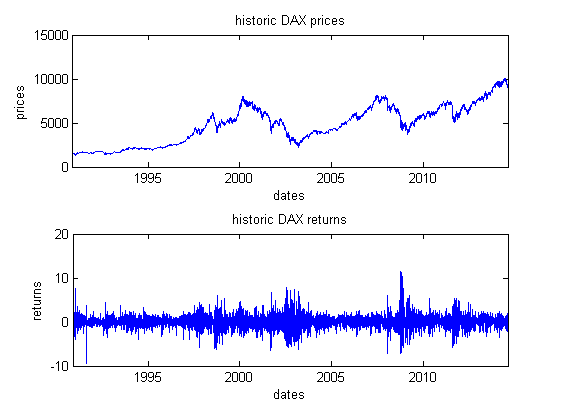
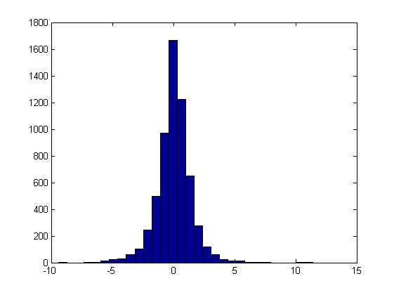
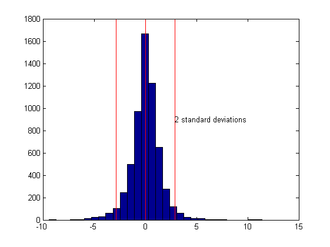
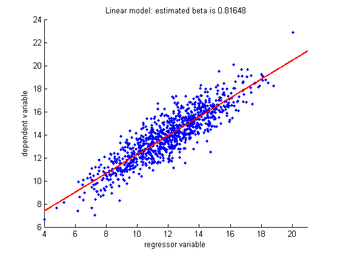
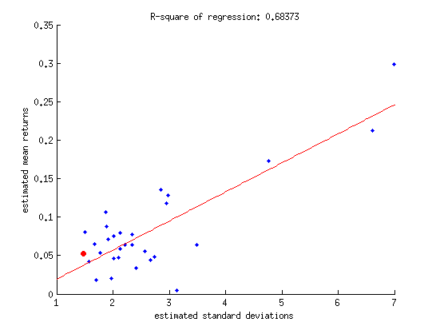
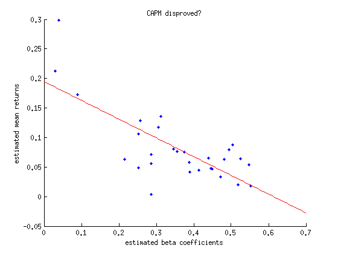
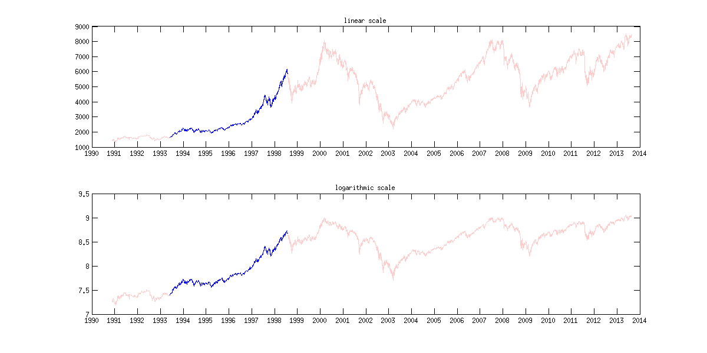

Working with financial data: regression analysis
Christian Groll
Chair of Financial Econometrics, Ludwig-Maximilians-University Munich.
All rights reserved.
Contents
This is the second part of the MATLAB course. Here we will show how to download real data and how this data can be further processed.
Then, as first application, we will examine whether some theoretical relationships between risk and return can be found in german stock data. This analysis will be based on regression models.
Subsequently, we will try to find deterministic trends in stock market data based on curve fitting approaches. Only the next script will show common approaches to modelling of stock market returns as stochastic variables.
Load historic DAX prices
The following code provides an example of the usage of the function hist_stock_data, which is able to download historic stock prices and trading volumes based on the data provided by Yahoo!finance. In order to make the data comply with our requirements, some additional treatments are needed first.
% specify ticker symbol as string variable tickSym = '^GDAXI'; % specify stock data of interest % specify beginning and ending as string variables dateBeg = '01011990'; % day, month, year: ddmmyyyy dateEnd = '01072013';
Alternatively, dates also can be determined dynamically, with regard to today. Since the MATLAB command "today" measures time on a numeric scale, the value displayed is a number.
% display date of today fprintf(['\nToday is ' num2str(today) '.\n']) % Note: fprintf is able to display a string to the command % window, without having to assign it to a variable or MATLAB's % temporary placeholder "ans" (short for "answer") first. In % order to get the input string, in this case we first have to % concatenate smaller strings into one large string.
Today is 735832.
In order to make the numeric data value more meaningful, we can transform it with the function datestr() into a date expression. As a string, this can be directly assigned to the variable declaring the end of the data period requested.
% dynamic assignment to end of period dateEnd = datestr(today, 'ddmmyyyy') % today as last date
dateEnd = 21082014
However, instead of using "today", you also can use the command "date", which returns the date as string right away.
fprintf(['\nToday is ' date '.\n'])
Today is 21-Aug-2014.
In order to download data from Yahoo!finance, we make use of the function hist_stock_data. This function can be found at the MATLAB File Exchange at http://www.mathworks.com/matlabcentral/fileexchange/. The File Exchange is a place where users can find and share content related to MATLAB development.
% load data
daxCrude = hist_stock_data(dateBeg, dateEnd, tickSym);
The function hist_stock_data returns a structure variable. A more detailed insight into the formatting of the output can be achieved with queries.
daxCrude exampleDateEntries = daxCrude.Date(1:4)
daxCrude =
Ticker: '^GDAXI'
Date: {6012x1 cell}
Open: [6012x1 double]
High: [6012x1 double]
Low: [6012x1 double]
Close: [6012x1 double]
Volume: [6012x1 double]
AdjClose: [6012x1 double]
exampleDateEntries =
'2014-08-20'
'2014-08-19'
'2014-08-18'
'2014-08-15'
As the second query shows, historic prices are ordered with latest observations first. This configuration is disadvantageous for further work, since plotting of the prices would show the latest observations to the left. Moreover, instead of storing the dates as a cell array of string variables, we will achieve more flexibility if we store dates as serial dates, which is the same conversion we already encountered with the today command. In this numeric scale, each date is assigned to a uniquely specified number. As anchor point of this system, January 1st, 0000, is assigned to the value one.
fprintf(['Number 1 is equal to the date ' datestr(1) '.\n'])
Number 1 is equal to the date 01-Jan-0000.
In order to switch between dates given as strings and numeric serial dates the functions datestr and datenum can be used. Now we want to convert the date strings to serial dates.
serialDates = datenum(daxCrude.Date, 'yyyy-mm-dd'); % second argument specifies input format of string dates
In accordance with common convention prices and dates shall be arranged in increasing order, with most recent data at the end. Instead of manually encoding a for-loop, the MATLAB function flipud can be used to flip both matrices upside down. The results will be assigned to fields of a new structure variable called dax.
% flip most recent entries to the end dax.dates = flipud(serialDates); % initializes structure dax dax.prices = flipud(daxCrude.Close);
Plotting financial data
When plotting financial data, we usually want the x-axis to be denoted in dates instead of numeric values. This can be done with help of the command "datetick", which interprets values of the respective axis as serial dates, and converts the labels of the individual ticks into meaningful date strings.
Further adjustments to graphical representations can be achieved by manual configuration of figure sizes, as well as additional graphics in one figure window. Both concepts are applied in the following illustration.
figure('position',[50 50 1200 600]) % create gray window, left % corner at latitude 50, % height 50, with width 1200 % and height 600 subplot(1, 2, 1); % Include two different white windows within % the gray figure window. 1,2 denotes % arrangement (one row, two columns of white % windows), while the last number (1) denotes % the currently used window. % use plot command without further adjustments plot(dax.prices) % since no x-values are specified, MATLAB % automatically numbers observations from 1 to % numel(dax.dates). subplot(1, 2, 2); plot(dax.dates, dax.prices) datetick 'x' % exact format of date labels can be chosen with % additional input, e.g. try datetick('x', 29) and % datetick('x', 10) xlabel('dates') ylabel('prices') title('historic DAX values') % crop x-axis to relevant size only set(gca, 'xLim',[dax.dates(1) dax.dates(end)])
As can be seen at the command line used to crop the x-axis, though MATLAB renders the x-axis labels to date strings, it still needs references denoted in numeric values. That is, it is not possible to directly tell MATLAB to restrict the axis to 01.01.2000 to 31.12.2002 for example. Indexing with date strings is generally not possible. Hence, simple graphical modifications may become quite cumbersome. As first example, the maximum value during the period shall be highlighted with a red point. The general way to do this will be to first find the entry with the highest point in the price vector, which will be given as index value relative to the price matrix. Then, the index has to be converted into the respective index of the serial dates vector. In most cases, lengths of price and serial dates vectors will coincide, so that nothing needs to be done in this step. At last, this index is used to get the value of the serial dates vector at the respective entry.
Logical indexing
In order to find certain specified values in a given matrix, MATLAB usually makes use of the concept of logical indexing. In logical notation, a value of zero represents "no", while a value of "1" has to be interpreted as "yes". Hence, for example, when checking whether the entries of a matrix fulfill a given condition, MATLAB checks the condition on each entry, and returns a logical matrix of same size filled with zeros and ones.
% init matrix matr = [1 2 3 4 5 6] % check if entries are greater than 3 greaterThan3 = matr>3 % matrix greaterThan3 is logical variable logicalCheck = islogical(greaterThan3)
matr =
1 2 3 4 5 6
greaterThan3 =
0 0 0 1 1 1
logicalCheck =
1
Such logical matrices created from logical or relational operations can be used to extract values of a given matrix. However, these extracted values are always returned arranged in vectors, so that information about the position in the original matrix is lost.
% get values greater than 3
valuesGreater3 = matr(greaterThan3)
valuesGreater3 =
4 5 6
In order to compare numerical values, MATLAB uses relational operators.
% equal to equalThree = (matr == 3) % since single equal signs are already % used for assignments, MATLAB notation % requires two equality signs to check % for equality % less or equal lessEqualThree = (matr <= 3) % greater or equal: >= % not equal to notEqualThree = (matr ~= 3)
equalThree =
0 0 1 0 0 0
lessEqualThree =
1 1 1 0 0 0
notEqualThree =
1 1 0 1 1 1
Matrix manipulation also can be done based on logical indexing. For example, set each value of matr below three to zero.
% new matrix given by matr(matr<3)=0 % multiply each entry greater than 4 with 10 matr(matr>4) = 4*matr(matr>4)
matr =
0 0 3 4 5 6
matr =
0 0 3 4 20 24
In order to check more than one condition, MATLAB also includes operators to combine logical matrices.
% create two random logicals log1 = (rand(3)>0.5) log2 = (rand(3)>0.5) % elementwise AND: both logicals have to be 1 AND = (log1 & log2) % elementwise OR: at least one of both logicals has to be 1 OR = (log1 | log2) % NOTBOTH: elementwise AND inverted with tilde command NOTBOTH = ~AND
log1 =
1 0 0
1 0 0
0 0 0
log2 =
0 1 0
0 1 0
1 0 1
AND =
0 0 0
0 0 0
0 0 0
OR =
1 1 0
1 1 0
1 0 1
NOTBOTH =
1 1 1
1 1 1
1 1 1
In order to not lose information about the position of entries within a matrix, you can use the find() function, which returns the indices of the first k entries which fulfill a certain condition. However, note that indices are given in single index notation.
matr greater20 = (matr>=20) % shows logical matrix: indices could be read % off manually find(matr>=20) % automatically returns all indices with logical % value one find(matr>=20, 1) % returns only first index with logical value one
matr =
0 0 3 4 20 24
greater20 =
0 0 0 0 1 1
ans =
5 6
ans =
5
Exercises: logical indexing
In order to deepen your understanding of logical indexing, you now should test yourself at the logical indexing assignment at the coursework homepage on https://coursework.mathworks.com.
Returning to the original intention to highlight the maximum price value, this gives
% find index of maximum price ind = find(dax.prices == max(dax.prices), 1); % find associated serial date maxDate = dax.dates(ind); % include in subplot(1, 2, 2) subplot(1, 2, 2) hold on; % allows to add elements, without deleting previous % graphic plot(maxDate, max(dax.prices), '.r', 'MarkerSize', 18) shg % show current graphic: pops up figure window again hold off; % next graphic will not be included again
Despite of going this quite cumbersome programmatic way, MATLAB also allows interactive request in figures. This way, press the "Data Cursor" button in the figures toolbar, select the global maximum on your own by clicking on it, then right click on datatip, and "Export Cursor Data to Workspace". Set name to maxPrice. This exports information about the maximum stock price into a structure called maxPrice.
Instead of absolute prices, investors usually are more interested in returns of the dax, where absolute gains / losses are put in relation to the capital invested. Since each return needs one starting value and one ending value, the length of the time series will decrease by one. Hence, also the date vector has to be adapted.
% transform prices to discrete percentage returns dax.disRet = 100*(dax.prices(2:end) - dax.prices(1:end-1))./... dax.prices(1:end-1); % date vector for returns dax.retDates = dax.dates(2:end); % compare prices and returns in figure close % closes previously used figure window % plot prices ax(1) = subplot(2, 1, 1); % storage of axes handle at ax(1) allows % accessing it later plot(dax.retDates, dax.prices(2:end)) datetick 'x' set(gca, 'xLim',[dax.retDates(1) dax.retDates(end)]) title('historic DAX prices') xlabel('dates') ylabel('prices') % plot returns ax(2) = subplot(2, 1, 2); plot(dax.retDates, dax.disRet) datetick 'x' set(gca, 'xLim',[dax.retDates(1) dax.retDates(end)]) title('historic DAX returns') xlabel('dates') ylabel('returns') % connect axes of both graphs: zooming in applies to both plots linkaxes([ax(1) ax(2)], 'x')
As can be seen, the return series exhibits phases of different volatilities. While most of the time rather small returns occur, there are also times were both positive and negative returns are persistently larger. This observation is usually refered to as volatility clusters, and is understood as a stylized fact about stock market data. However, when focussing on longer investment horizons, we usually neglect the information about the exact times of occurrence of each return, and take a look at the distribution of returns only. This is done with a histogram.
close % closes previously used window hist(dax.disRet, 30) % sample size justifies 30 bins
In this figure, we want to include a line indicating the mean return over the observed period, as well as two lines indicating regions with more than two standard deviations away from the mean.
% calculate mean return meanRet = sum(dax.disRet)/numel(dax.disRet); % calculate standard deviation stdDev = sum((dax.disRet-meanRet).^2)/(numel(dax.disRet)-1); stdDev = sqrt(stdDev); % check results with existing MATLAB functions deviations = [(meanRet - mean(dax.disRet))... (stdDev-sqrt(var(dax.disRet)))] % include in graphic yLimits = get(gca, 'yLim'); line(meanRet*[1 1], yLimits, 'Color', 'r') line((meanRet+2*stdDev)*[1 1], yLimits, 'Color', 'r') line((meanRet-2*stdDev)*[1 1], yLimits, 'Color', 'r') text(meanRet+2*stdDev, yLimits(end)/2, '2 standard deviations')
deviations =
0 0
 Missing data
Downloading a single asset only with hist_stock_data will not give us any missing values in our time series, since dates without observations are simply left out. However, leaving the case of a single asset only and switching to multiple assets, the individual time series will most likely have different missing dates. For example, US stocks and German stocks have different holidays.
One way to deal with this fact would be to simply erase all dates where we do not have observations for all assets. This way, however, we will eliminate quite many observations that we could have used for univariate modeling. Hence, we will follow a more sophisticated approach, where we will keep all dates that occur in at least one stock price series, and fill the respective missing values with MATLAB's NaN. Hence, we now first want to get familiar with the behaviour of NaNs through some examples.
% NaNs in comparisons: NaN == NaN % false NaN ~= NaN % true a = [1; NaN; 3]; b = [1; NaN; 3]; a == b % false NaN > NaN % false % NaNs in mathematical operators: 3 + NaN % NaN mean(a) % NaN % NaNs in logical operators: % throwing errors try true & NaN catch err err.message end try false | NaN catch err err.message end
ans =
0
ans =
1
ans =
1
0
1
ans =
0
ans =
NaN
ans =
NaN
ans =
NaN's cannot be converted to logicals.
ans =
NaN's cannot be converted to logicals.
Object oriented programming
What we really want now is to create a function that downloads stock price data of multiple assets through hist_stock_data, combines all stocks, keeps a single dates vector including all dates that occur in at least one stock and fills missing observations with NaN. Still, however, we need to decide about the exact data type that should be used as a data container, and there are several possible types in MATLAB: cell array, structure, matrix plus dates vector, table, time series object, financial time series object, ...
Different kinds of data also exhibit different patterns. For example, time series data always comes with a time value. In addition, time values are chronologically sorted for stock prices and contain numeric values only.
Depending on the patterns of the data, we might want some basic functions to behave differently. For example, plots of time series data should have the x axis labelled by dates instead of numbers. Ideally, the plotting function for time series data and matrix data should have the same name, as we would end up with function names like 'plotTimeSeries' otherwise.
This can be achieved through object oriented programming. In addition to the data itself, the data also gets a label that tells the computer about the structure that the data represents. For example, a nx2 matrix of numeric values could in reality be representing time series data: the first column are dates in MATLAB's serial date format, while the second column represents the data. As the data still is just a matrix of numeric values, there is no way how MATLAB could distinguish between general numeric matrices and time series data.
Through object oriented programming, however, the numeric time series data could be labelled as such, so that MATLAB can find some meaning in the data in order to chose an adequate way of plotting it. Labelling the data is achieved through making it an object: the data simply gets stored as an object of a certain type.
In MATLAB, there basically exist two data types that allow such a labelling of time series data. However, depending on which type / label you assign to your data, MATLAB will interpret some basic functions differently.
Financial Time Series Objects: - requires Financial Toolbox - allows indexing with dates
Time Series Objects: - implemented aggregation functions: daily to monthy, yearly, ...
These objects usually store data in some field .Data.
Alternatively, one could also store time series data in the most general type as table. This way, however, functions can not be customized to time series patterns, and data is not restricted to numeric values only. Still, we can make use of some nice and general data manipulation functions that are implemented for tables, one of them being an outer join which we need to combine the individual assets. Hence, we will keep data stored as tables here, although the decision of the right data type basically is a matter of personal preferences. Dealing with tables, however, one still needs to decide whether time information should be stored as separate column, or as names of the rows.
Exercises
1.) do the table exercises at courseworks
2.) implement a function getData that downloads and processes data and returns the result as table
Regression analysis
One of the most important models also in econometrics is the linear model. Hence, the following lines show the implementation and estimation of a linear regression model in MATLAB. First, we sample from a specified linear model.
% init params nSim = 1000; % sample size muX = 12; % params explanatory variable sigmaX = 2.3; coeff = 0.8; % regression coefficient intcept = 4.3; % regression intercept % simulate explanatory variable xMatr = normrnd(muX, sigmaX, nSim, 1); % simulate standard normally distributed innovations epsilon = randn(nSim, 1); % calculate Y according to linear model yMatr = intcept + coeff*xMatr + epsilon; % do not use for loop
Now we want to estimate the parameters of the model based on the values simulated.
% because of intercept, expand matrix of explanatory variables xMatr = [ones(nSim, 1) xMatr]; % OLS estimation, naive way paramsHat = inv(xMatr'*xMatr)*xMatr'*yMatr; % usual estimation formula % avoiding single matrix inversion as mlint warning suggests paramsHat2 = (xMatr'*xMatr)\(xMatr'*yMatr); % faster way paramsHat3 = xMatr\yMatr; % best way % calculate regression line xLimits = [floor(min(xMatr(:, 2))) ceil(max(xMatr(:, 2)))]; % use nearest % neighbouring integer numbers grid = xLimits(1):0.1:xLimits(2); vals = paramsHat(1)+paramsHat(2)*grid; % plotting data close scatter(xMatr(:, 2), yMatr, '.'); % used for visualizing points % cloud % include regression line hold on; % plot in same figure plot(grid, vals, 'LineWidth', 2, 'Color', 'r') % larger line width set(gca, 'xLim', xLimits) xlabel('regressor variable') ylabel('dependent variable') title(['Linear model: estimated beta is ' num2str(paramsHat(2))]) hold off;
Because of the risk-aversion of investors, theoretical models often conclude that riskier assets should in general coincide with higher expected returns, since investors demand higher compensation for the risk involved. As a first application of the linear model, we want to investigate whether this positive relationship can be verified for German stock data. Therefore, we will download historical data of all 30 components of the German stock market index DAX, estimate their mean return and return standard deviation, and regress the mean returns on the standard deviations. Note that standard deviation is only one way to measure inherent risk, and one common criticism is that the symmetrical nature of standard deviation measures positive deviations the same way as negative ones.
% specify start and end point of investigation period dateBeg = '01011990'; dateEnd = '01072011'; % download data of all components: dax_comp is structure array daxComp = {'ADS.DE', 'ALV.DE',... 'BAS.DE', 'BAYN.DE', 'BEI.DE', 'BMW.DE', 'CBK.DE', 'DAI.DE', ... 'DB1.DE',... 'DBK.DE', 'DPW.DE', 'DTE.DE', 'EOAN.DE', 'FME.DE', 'FRE.DE',... 'HEI.DE', 'HEN3.DE', 'IFX.DE', 'LHA.DE', 'LIN.DE', 'MAN.DE',... 'MEO.DE', 'MRK.DE', 'MUV2.DE', 'RWE.DE', 'SAP', 'SDF.DE',... 'SIE.DE', 'TKA.DE', 'VOW3.DE', '^GDAXI'};
In order to conduct this analysis, we will first use our implemented function getPrices to download prices of all DAX components. Afterwards, we need to translate the prices into logarithmic returns.
daxCompPrices = getPrices(dateBeg, dateEnd, daxComp); daxCompRets = price2retWithHolidays(daxCompPrices);
Now that we have downloaded the data, we want to visually check them for inconsistencies. Therefore, it is best to look at normalized prices: we artificially make the starting price for all assets the same. This in general could easily be done with function cumsum. However, due to the missing observations in our data sample we need to take a different function in order to not return NaNs. Here, we use function nancumsum from the MATLAB file exchange.
close % close last figure normalizedPrices = nancumsum(daxCompRets{:,:}); plot(numDates(daxCompRets), normalizedPrices) datetick 'x'
Next, we will calculate the number of observations for each stock. This way, we can see whether individual stocks have substantially less data than the rest.
nObs = sum(~ismissing(daxCompRets), 1); nObsTable = array2table(nObs); nObsTable.Properties.VariableNames = daxCompRets.Properties.VariableNames;
Now that historical returns are given suitable form, we can estimate expected returns and standard deviations. Note that most statistical functions act columnwise. Hence it is always preferable to store observations of a given variable in a column vector, and use different columns for different variables. In our case, however, there are NaNs in our columns, which will lead to NaNs for any calculations as well. Hence, we need to take the missing values into account at each step. For simple statistics like mean and variance we can take the respective function from the statistics toolbox (nanmean, nanstd, ...).
% estimate returns and sigmas of DAX components expRets = nanmean(daxCompRets{:,:}*100); sigmaHats = nanstd(daxCompRets{:,:}*100); % show in figure, standard deviations on x-axis close % close last figure scatter(sigmaHats, expRets, '.') % highlight DAX itself hold on; scatter(sigmaHats(end), expRets(end), 30, [1 0 0], 'filled') % estimate regression line % betaHat = [ones(numel(sigmaHats), 1) sigmaHats']\expRets'; betaHat = [sigmaHats']\expRets'; % calculate regression line xLimits = get(gca, 'XLim'); grid = linspace(xLimits(1), xLimits(end), 200); % divide % specified interval in 200 % parts of equal size yVals = [grid']*betaHat; % include regression line in red plot(grid, yVals, 'r') % get R^2 from existing MATLAB function stats = regstats(expRets, sigmaHats',... 'linear', 'rsquare'); title(['R-square of regression: ' num2str(stats.rsquare)]) xlabel('estimated standard deviations') ylabel('estimated mean returns')
Although the regression line exhibits an increasing slope as theory suggests, the R-squared of the regression is rather small. Evidence for a positive relation between return and risk is rather weak.
CAPM
The capital asset pricing model tries to explain asset pricies. It is set up on the assumption, that investors only get compensated for that part of an asset's risk that can not get diversified away in a portfolio. Shortly speaking, each assets partly exhibits comovements with the market, called systematic risk. Since this risk component underlies each asset, it can not be diversified away. Hence, investors need to be compensated for it. In contrast to that, the remaining risk inherent in an asset is called the idiosyncratic risk. This component is stock specific, and hence not correlated with idiosyncratic components of other firms. Hence, in a large portfolio of assets, this component could be diversified away.
In order to measure each assets' comovement with the market, we perform a linear regression of the daily returns on daily returns of a market index. Note that the theory is based on dependence to a market portfolio, where our market index here is only an imperfect substitution.
% preallocate vector for estimated betas nDaxComponents = size(daxCompRets, 2) -1; betas = zeros(1, nDaxComponents); for ii=1:nDaxComponents betas(ii) = regress(daxCompRets{:, end},... daxCompRets{:, ii}); % no intercept involved end % plot betas with expected returns close scatter(betas, expRets(1:end-1), '.') % estimate regression coefficients with intercept betaHat = [ones(numel(betas), 1) betas']\expRets(1:end-1)'; % include regression line xLimits = get(gca, 'XLim'); grid = linspace(xLimits(1), xLimits(end), 200); yVals = [ones(numel(grid), 1) grid']*betaHat; hold on; plot(grid, yVals, 'r') xlabel('estimated beta coefficients') ylabel('estimated mean returns') title('CAPM disproved?')
Note that this analysis is only a very rough investigation of the validity of the CAPM, with many sources of error involved (only substitute for market portfolio, applied to returns instead of excess returns,...). In fact, the purpose merely was to come up with some easy example of regression analysis in finance. So do not make the mistake to interpret the investigations as scientifically rigurous and adequate approach. As part of a more thorough investigation at least also returns of larger time horizons would have to be examined.